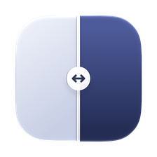

SeamDatenschutzerklärung
Diese Erklärung betrifft diese Webseite. Die App Seam selbst sendet keine Daten an den Anbieter, dazu mehr im letzten Abschnitt.
1. Verantwortlicher
Michael Wildenauer
Kiesmüllerstr. 2a
81549 München
Deutschland
E-Mail: tippi@mwlr.dev
2. Hosting und Server-Logdateien
Diese Seite wird über GitHub Pages bereitgestellt, einen Dienst der GitHub, Inc., 88 Colin P. Kelly Jr. Street, San Francisco, CA 94107, USA.
Beim Aufruf der Seite erhebt GitHub technisch notwendige Zugriffsdaten in Server-Logdateien. Dazu gehören in der Regel:
- IP-Adresse des anfragenden Geräts
- Datum und Uhrzeit des Abrufs
- Name und URL der abgerufenen Datei
- übertragene Datenmenge und HTTP-Statuscode
- verweisende Webseite (Referrer)
- Browsertyp, Browserversion und Betriebssystem
Rechtsgrundlage ist Art. 6 Abs. 1 lit. f DSGVO. Das berechtigte Interesse liegt in der technisch fehlerfreien Auslieferung, der Stabilität und der Sicherheit der Webseite. Ich selbst habe keinen Zugriff auf diese Logdateien und werte sie nicht aus.
GitHub, Inc. verarbeitet die Daten auch in den USA. GitHub unterhält eine Zertifizierung nach dem EU-U.S. Data Privacy Framework; der aktuelle Status ist in der offiziellen Liste unter dataprivacyframework.gov einsehbar. Auf dieser Grundlage stützt sich die Übermittlung auf den Angemessenheitsbeschluss der EU-Kommission nach Art. 45 DSGVO. Datenschutzerklärung von GitHub: GitHub Privacy Statement.
3. Keine Cookies, kein Tracking
Diese Webseite setzt keine Cookies, speichert nichts in deinem Browser, bindet keine Analyse- oder Tracking-Dienste ein, lädt keine Schriften oder Skripte von fremden Servern und zeigt keine Werbung. Es findet keine Profilbildung und keine automatisierte Entscheidungsfindung statt.
4. Links zu externen Seiten
Die Seite verlinkt auf das Projekt-Repository und die Download-Dateien bei GitHub sowie auf die Webseiten der Apps Kalli (miwixyz.github.io/Kalli) und Tippi (tippi.mwlr.dev). Mit dem Klick auf einen solchen Link verlässt du diese Webseite; ab diesem Zeitpunkt gilt die Datenschutzerklärung der jeweiligen Seite. Eine Datenübertragung findet erst durch deinen Klick statt, nicht bereits beim Aufruf dieser Seite.
5. Deine Rechte
Dir stehen gegenüber dem Verantwortlichen folgende Rechte zu:
- Auskunft über die zu deiner Person gespeicherten Daten (Art. 15 DSGVO)
- Berichtigung unrichtiger Daten (Art. 16 DSGVO)
- Löschung (Art. 17 DSGVO)
- Einschränkung der Verarbeitung (Art. 18 DSGVO)
- Datenübertragbarkeit (Art. 20 DSGVO)
- Widerspruch gegen die Verarbeitung (Art. 21 DSGVO)
Zur Ausübung genügt eine formlose Nachricht an tippi@mwlr.dev.
6. Beschwerderecht bei der Aufsichtsbehörde
Unbeschadet anderer Rechtsbehelfe steht dir ein Beschwerderecht bei einer Datenschutz-Aufsichtsbehörde zu. Zuständig ist:
Bayerisches Landesamt für Datenschutzaufsicht (BayLDA)
Promenade 18
91522 Ansbach
www.lda.bayern.de
7. Die App Seam
Seam als Anwendung überträgt keine Daten an den Anbieter: kein Server, kein Konto, keine Analyse, keine Kennungen, keine Werbung. Konkret:
- Seam braucht die Freigabe „Gerätesteuerung und Datenzugriff“ von macOS (früher „Bedienungshilfen“), um Fenster anderer Apps zu bewegen. Von diesen Fenstern liest es nur Rolle und Unterrolle, Lage, Größe, ob das Fenster minimiert oder im Vollbild ist, und die Prozessnummer der App. Für das Abdunkeln liest es aus der Fensterliste von macOS nur Fensternummer, Prozessnummer und Lage, um zu erkennen, welches Fenster vorn liegt, und prüft, ob die vordere App der Finder ist (dann liegt der Schreibtisch vorn). Fenstertitel und Inhalte liest Seam dafür nicht.
- Abdunkeln (ab 0.6): Für deine Einstellungen je Bildschirm merkt sich Seam die Kennung, die macOS dem Bildschirm gibt, nicht seinen Namen. Hast du Apps vom Abdunkeln ausgenommen, liest Seam die App-Kennung (Bundle-ID) der Fenster, nur um sie mit dieser Liste zu vergleichen. Die Kennung bleibt im Arbeitsspeicher und landet nicht im Protokoll. Seam speichert nur deine Auswahl je Bildschirm und die Kennungen der gewählten Apps und Spaces, in seinen Einstellungen auf deinem Mac.
- Für die Namen der Spaces liest Seam über eine nicht offiziell dokumentierte Schnittstelle von macOS nur die Liste der Spaces und welcher gerade aktiv ist. Die Namen, die du vergibst, speichert Seam nur in seinen Einstellungen auf deinem Mac.
- An Fenstern anderer Apps ändert Seam nur Lage und Größe. Bei zwei Fenstern, die du mit ⌃⌥S geteilt hast, hebt es zusätzlich den Partner an und minimiert ihn mit oder holt ihn zurück.
- Tastenkürzel meldet Seam bei macOS an und erhält nur diese Tastenkombinationen. Andere Tastatureingaben sieht es nicht, die Freigabe „Eingabeüberwachung“ braucht es nicht.
- Die Maus beobachtet Seam nur passiv (Taste gedrückt, Ziehen, Loslassen), um Andocken und Mitziehen zu erkennen. Es verändert oder erzeugt keine Maus- oder Tastaturereignisse.
- Gespeichert werden nur deine Einstellungen auf deinem Mac. Die ursprüngliche Größe eines Fensters und welche Fenster ein Paar bilden, hält Seam nur im Arbeitsspeicher, und nach einem Neustart ist beides weg. Fensteranordnungen speichert Seam nicht.
- Layouts (ab 0.7, nur wenn du eins speicherst): Seam speichert je Bildschirm-Kombination, welche App (Kennung, Bundle-ID) auf welchem Schreibtisch liegt (Name, Bildschirm, Position) und wie groß ihre Fenster sind, in seinen Einstellungen auf deinem Mac. Liegen Fenster einer App auf allen Schreibtischen eines Bildschirms (ab 0.8), merkt es sich stattdessen nur den Bildschirm. Keine Fenstertitel, keine Zeiten, keine Häufigkeit. Um die Fenster zu finden, liest Seam aus der Fensterliste von macOS Fensternummer, Prozessnummer, Lage und auf welchem Schreibtisch ein Fenster liegt. Um ein Fenster sicher zu greifen, liest es an einer Stelle der Titelleiste Rolle, zugehöriges Fenster und die Namen der möglichen Aktionen, nie Inhalte. Ins Protokoll schreibt Seam dazu nur Zahlen und Gründe, keine App-Namen.
- Beim Aufräumen der Layouts (ab 0.7) bewegt Seam selbst die Maus und drückt ⌃← / ⌃→, um Fenster auf ihren Schreibtisch zu bringen. Andere Tasten erzeugt Seam nicht, und sobald du Maus oder Tastatur benutzt, hört es auf. Ob du eine Taste gedrückt hast, erkennt es nur daran, wie viele Tasten seit Beginn gedrückt wurden (ab 0.8; vorher am Zeitpunkt der letzten Eingabe), nicht an der Taste selbst.
- Links (ab 0.5, nur wenn du Seam als Standardbrowser einschaltest): Seam bekommt von macOS die Adresse eines angeklickten Links und die Kennung der App, aus der er kommt. Es entfernt bekannte Tracking-Parameter (abschaltbar) und gibt die Adresse an einen Browser auf deinem Mac weiter. Seam lädt die Seite nicht selbst, schreibt keine Adresse ins Protokoll und führt keinen Verlauf. Gespeichert werden nur die Regeln, die du anlegst (Website, App, Browser), in Seams Einstellungen auf deinem Mac.
- Hintergrund (ab 0.9, nur wenn du ihn einschaltest): Seam speichert den Pfad der Datei, die du gewählt hast, in seinen Einstellungen auf deinem Mac. Die Datei selbst liest es nur und verändert sie nie. Für das macOS-Hintergrundbild schneidet Seam das Bild je Bildschirm zu und legt die Stücke in seinem eigenen Ordner
~/Library/Application Support/Seam/Hintergrund/ab. Ins Protokoll schreibt es dazu nur, ob es ein Video oder ein Bild ist und auf wie vielen Bildschirmen, keinen Dateinamen. - Online aussuchen (ab 0.10, nur wenn du das Fenster „Online-Auswahl“ benutzt): Seam schickt dein Suchwort an Pixabay (
pixabay.com), Pexels (api.pexels.com) oder Wikimedia Commons (commons.wikimedia.org) und lädt Vorschauen und die gewählte Datei von deren Servern. Diese Dienste sehen dabei, wie bei jeder Webadresse, deine IP-Adresse, das Suchwort und den Zeitpunkt; es gelten ihre Datenschutzerklärungen. Den Schlüssel für Pixabay oder Pexels gibst du selbst ein; Seam legt ihn in deinem Schlüsselbund ab und schickt ihn nur an den jeweiligen Dienst. Suchergebnisse hält Seam bis zu 24 Stunden im Arbeitsspeicher, geladene Dateien liegen in~/Library/Application Support/Seam/Hintergrund/Online/(höchstens 30). Ins Protokoll schreibt Seam nur Quelle und Trefferzahl, kein Suchwort und keinen Schlüssel. - Fensterumschalter und Dock-Vorschau (ab 0.12, nur wenn du sie einschaltest): Seam fragt dann die Freigabe „Bildschirmaufnahme“ an, liest über macOS die Liste der Fenster mit Titel und macht Vorschaubilder davon, nur in dem Moment, in dem du ⌘Tab drückst oder auf ein Dock-Symbol zeigst. Bilder und Titel bleiben im Arbeitsspeicher (höchstens 120 Bilder) und sind beim Ausschalten oder Beenden weg. Sie landen nicht auf der Festplatte, nicht im Netz und nicht im Protokoll. Vom Dock liest Seam nur, welches Symbol unter dem Zeiger liegt und zu welcher App es gehört. Solange der Umschalter an ist, schaltet Seam die Umschalt-Kürzel von macOS ab und beim Ausschalten oder Beenden wieder ein. Für „Spaces in fester Reihenfolge“ ändert Seam eine Einstellung des Docks und merkt sich deren vorherigen Wert.
- Supertaste (ab 0.12, nur wenn du sie einschaltest): Seam startet den eingebauten Helfer SeamKeys, der eine eigene Freigabe von macOS bekommt. Er legt die Feststelltaste auf eine freie Taste und sieht jeden Tastendruck, um bei gehaltener Feststelltaste Sondertasten hinzuzufügen. Er speichert keine Tasten, schreibt keine ins Protokoll, hat keinen Netzzugang und keinen Zugriff auf Fenster oder Bildschirm. Er läuft nur, solange Seam läuft.
- Wach bei zugeklapptem Deckel (ab 1.1, nur wenn du es einschaltest): Seam bittet den eingebauten Helfer SeamWake, den Ruhezustand abzuschalten. SeamWake läuft mit Systemrechten, kann aber nur einen Befehl ausführen:
pmset -a disablesleep 1oder0. Dafür liest er Ladestand, Stromquelle und Wärmezustand des Macs. Er hat keinen Netzzugang, liest keine Dateien, Fenster oder Eingaben und speichert nur eine leere Markierungsdatei, solange der Wachmodus an ist. Er nimmt nur Aufträge von Seam selbst an, geprüft an der Signatur. - Kürzel-Blatt (ab 1.2, nur wenn du es einschaltest): Hältst du ⌘ allein gedrückt, liest Seam über die Bedienungshilfen die Menüleiste der App, die gerade vorn ist. Gelesen werden nur Menüpunkte mit Kürzel samt ihrem Titel, ohne das Apple-Menü und ohne Kürzel mit ⌘ und einer Ziffer, damit keine Fensterlisten mit Dokumentnamen erscheinen. Die Titel liegen nur im Arbeitsspeicher, solange das Blatt zu sehen ist, und stehen nie in Einstellungen, Protokoll oder Zwischenablage. Von der Tastatur sieht Seam dabei nur, ob ⌘ allein gehalten wird, keine Buchstaben. Eine zusätzliche Freigabe braucht es dafür nicht.
- Stream Deck (ab 1.3, nur wenn du es einschaltest): Seam öffnet einen lokalen Socket in deinem Benutzerordner und nimmt nur feste Befehle des eigenen, signierten Plugins an, wenn auch Elgatos Stream-Deck-App echt signiert ist. Zurück an das Gerät gehen nur Zahlen und Zustände (Stufe der Naht, „kein Fenster“), nie Namen von Apps, Fenstern oder Dateien. Einzige Ausnahme, nur mit eigenem Schalter (ab Werk aus): die Vorschau des Hintergrunds auf der Leiste (ab 1.4). Dann schickt Seam ein kleines Bild (200 × 100 Pixel, höchstens 5 KB) des gerade geltenden Hintergrunds an die Stream-Deck-App von Elgato, auch wenn es ein privates Foto aus deinem Ordner ist. Das Plugin hält es nur im Arbeitsspeicher. Videos haben keine Vorschau.
- Ins Systemprotokoll von macOS schreibt Seam, was es getan hat: Aktion, Zielfläche, Bildschirm und die Kennung der betroffenen App. Titel oder Inhalte stehen dort nicht. Das Protokoll bleibt auf deinem Mac.
Außer der Online-Auswahl (oben) greift die App nur für die Suche nach Updates aufs Netz, bei GitHub
(raw.githubusercontent.com, beim Installieren eines Updates auch
github.com). Beim ersten Mal fragt Seam, ob es selbst suchen darf.
Bei einem Abruf sieht GitHub, wie bei jeder Webadresse, deine IP-Adresse, den
Zeitpunkt und die installierte Version. Die Begründung jeder dieser Entscheidungen
steht im
Sicherheitsentwurf
im Quellcode.
8. Stand
Diese Datenschutzerklärung hat den Stand November 2026.